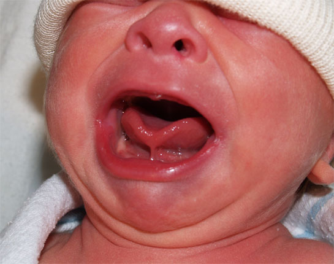

-
Occurs in approximately 4% of newborns.
-
Many babies breastfeed without difficulty
-
In severe cases, a tight frenulum can affect latching on, and frenulotomy may be indicated.
-
No prospective trials on the outcome of speech in those infants identified at birth, so this is not currently an evidence based reason to clip the frenulum in the nursery. The impact on breastfeeding, however, is well documented.